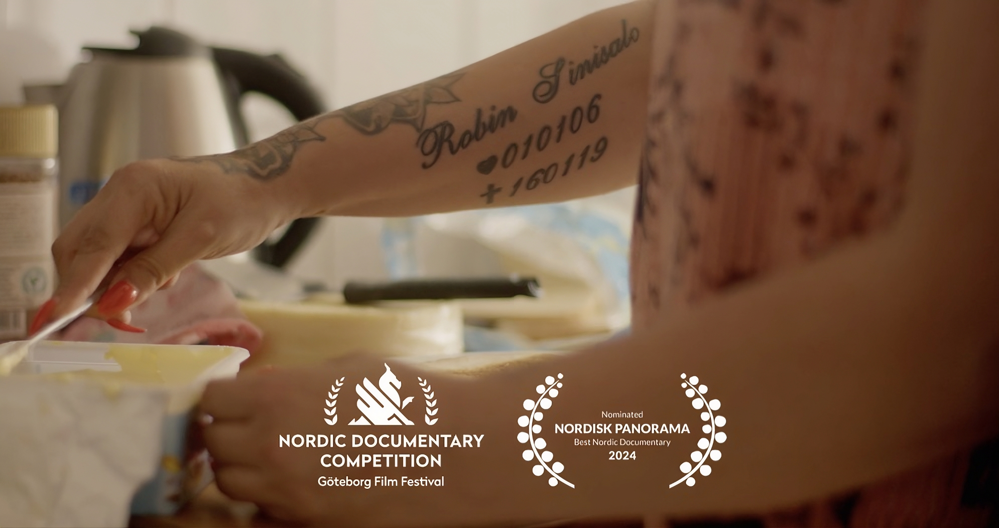

en film av Petra Bauer & Marius Dybwad Brandrud
Femton noll tre

Om filmen
Det är den 19 januari 2016, Carolina Sinisalo är på bröllopsresa när hon får ett telefonsamtal. Det har skett en skjutning i hemmets trappuppgång i Akalla. Hennes yngsta son är död och den äldre ligger i koma.
Filmen femton noll tre nittonde januari två tusen sexton är ett samarbete mellan Bauer, Dybwad Brandrud och Sinisalo. Tillsammans vill de synliggöra hur skapandet av minnen kan vara ett sätt att sörja och samtidigt mobilisera. Carolina gör motstånd mot våldet som drabbat hennes familj och mot majoritetssamhällets förenklade berättelser om det våld som präglat Sveriges förorter sedan början av 2000-talet.
"Det här är en film om dem som tar ansvar för sin plats och sitt sammanhang, som stannar när samhället har lämnat."
— Petra Bauer & Marius Dybwad Brandrud
Medverkande & team
- MedCarolina Sinisalo
- MedHero Rashid
- MedEsme Güler
- MedFadumo Dahir Igal
- MedNursen Sürücü Okan
- MedRokeya Begum
- Foto/KlippMarius Dybwad Brandrud
- LjudDavid Gülich
- Grafisk formMaeve Redmond
Visningar
Kommande visningar meddelas via Folkets Bio.
Kontakt
För frågor om visningar, press och rättigheter:
info@folketsbio.se